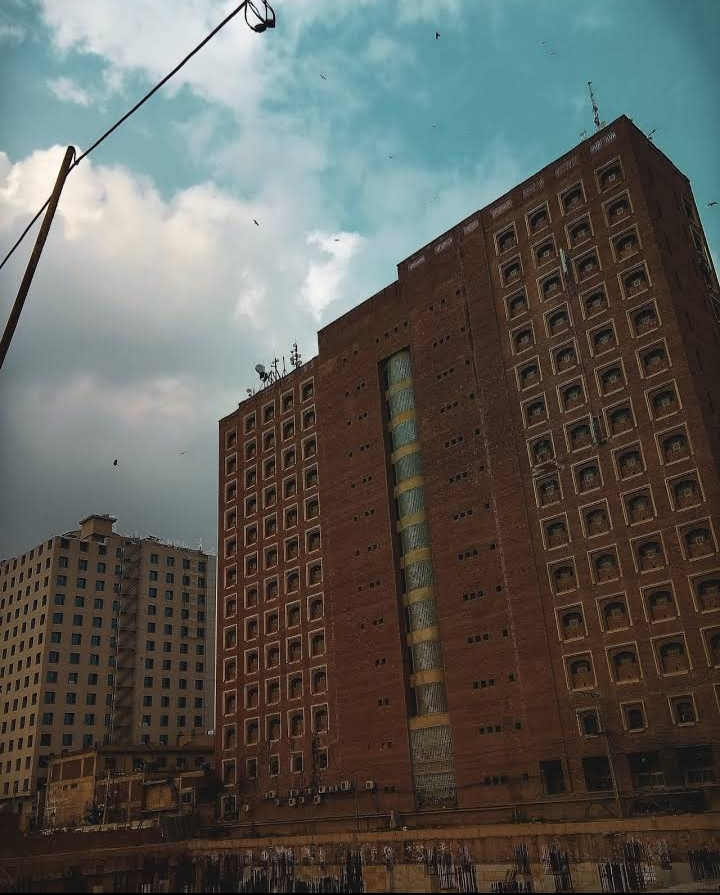

SWAT
swat is a district in Malakand Division of Khyber Pakhtunkhwa province in Pakistan. Swat is renowned for its outstanding natural beauty. Centred upon the upper portions of the Swat River,

NARAN
Naran (Urdu: ناران ) is a medium-sized town in upper Kaghan Valley in Mansehra District of Khyber Pakhtunkhwa province of Pakistan.

GWADAR
is a port city on the southwestern coast of Balochistan, Pakistan.

CHITRAL
chitral is the capital of the Chitral District, situated on the Chitral River in northern Khyber Pakhtunkhwa, Pakistan. Chitral also served as the capital of the princely state of Chitral until 1947.

lahore
Lahore is the capital of the Pakistani province of Punjab. It is the country's 2nd largest city after Karachi and 18th largest city proper in the world.[

KARACHI
krach is the province of Sindh .. It is the largest and buty full city in Pakistan, karachi is Known as the "City of Lights

islamabad
Islamabad is the capital city of Pakistan Built as a planned city in the 1960s to replace Karachi as Pakistan's capital, Islamabad is noted for its high standards of living With a population of 1,014,82
